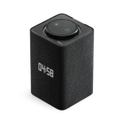

Музыка
Музыка на вашей станции
Выберите песню в музыкальном сервисе
Проигрыватель готов
Выберите песню в музыкальном сервисе
Проигрыватель готовКоманды телевизора зависят от поддержки HDMI-CEC. Вызов помощника доступен, если эта кнопка поддерживается прошивкой.
«Играй», «пауза», «стоп», «хватит», «следующий», «назад». Управляют выбранным плеером, если у него есть музыкальная сессия. Остановка будильника и речи Алисы остаётся штатной.
Первый найденный трек будет выбран в установленном плеере. Состояние запуска показано ниже.
Голосовой запуск зависит от возможностей установленного плеера. Проверка покажет, поддерживает ли он воспроизведение по запросу.
Команды отправляются выбранному сервису. Перемотка, повтор и случайный порядок доступны, если плеер поддерживает их через Android.
Таймер выключен
Выберите, что изменить: передний дисплей, кольцо или реакции Алисы.
Загрузите фото или GIF, выберите готовую анимацию либо рисуйте по пикселям.
Фото превращается в один кадр, GIF и видео — в анимацию. Передний дисплей монохромный: цвета станут оттенками яркости. Предпросмотр показывает результат в 25 × 16 точек.
Выберите анимацию, затем нажмите «На дисплей».
Выберите источник, эффект и место показа. Обложка задаёт гамму кольца, звук — его движение.
Проверяем обложку выбранного плеера…
Яркость кольца и дисплея, а также время показа задаются в их настройках.
Ожидаем данные плеера
Для своих часов нарисуйте фон в «Медиа и рисунки», вернитесь сюда и добавьте его. Цифры меняются автоматически.
Длительность и яркость — в общих настройках выше. Во время обращения к Алисе часы уступают место её анимации.
Название песни и исполнитель на переднем дисплее.
Поддерживаются WLED и цветные Yeelight с включённым управлением по локальной сети. Другие лампы здесь не появятся автоматически.
Устройства не выбраны
Режим «в такт» использует музыкальный визуализатор. Перед запуском сохраняется исходный свет; после остановки он возвращается. Обложка доступна, если плеер передаёт её системе.
Меняется передний монохромный дисплей станции, 25 × 16 точек. Значок на телевизоре настраивается отдельно ниже.
Какое состояние Алисы должно показывать эту работу?
Оригиналы сохраняются. Для применения Алиса коротко перезапустится; дождитесь окончания её ответа.
Своё фото или GIF поверх области штатного значка. Иконка появляется только во время обращения к Алисе, занимает небольшую область и не перехватывает пульт. Положение можно подогнать под ваш телевизор.
Изображение пока не выбрано
Передний LED настраивается выше; эта иконка относится только к HDMI.
Реакция на микрофоны станции. Обработка идёт на станции, звук не сохраняется и не отправляется на сервер.
Яркость и время показа — в настройках выше. Кольцо использует выбранную гамму. Штатные реакции Алисы имеют приоритет.
Сохранить — оставить работу на станции. Открыть — загрузить её в редактор. Показать — запустить на переднем дисплее.
Рисунки, анимации и настройки сохраняются на станции и доступны с других устройств. До 120 кадров, 100 работ.
Штатная индикация возвращает управление светом Алисе.
Кольцо показывает последовательность цветов флага. Геометрические символы и шевроны на кольце из 24 светодиодов не воспроизводятся. Свои палитры дополняют каталог.
Скажите «Алиса» и фразу из карточки. Свой сценарий с такой же фразой имеет приоритет.
Загрузите музыку, реплику или звуковой эффект и назначьте свою фразу для запуска. Фраза запускает выбранный аудиофайл.
До 20 МБ и пяти минут на файл. Файлы хранятся на станции.
Например: «Алиса, моя дискотека» или «Алиса, покажи кота». Сценарий может объединять несколько действий. Короткие «пауза» и «следующий» относятся к выбранному плееру, когда у него есть музыкальная сессия. Для оформления говорите «на дисплее», «на кольце» или «на станции».
Настройте любую функцию панели, затем выберите «Последнее действие в панели»: оно сохранится с теми же параметрами. Загрузка файлов и установка прошивки голосом не выполняются.
Выбирайте версии для Android TV. Магазин получает обновления от разработчиков; панель показывает особенности совместимости.
Обновления приложения загружаются из общего канала. Для управления колонкой подключитесь к её домашней сети.
Очистка сохраняет аккаунты, приложения и настройки.
Первое подключение телефона подтверждается кодом. После этого приложение находит станцию в домашней сети и проверяет её сертификат.
Введите этот код в приложении. Он действует 5 минут и подходит для одного подключения.
Приложение работает с агентом на станции. При первой установке мастер проверяет модель, сборку, ADB и root. Проверенный профиль: Station Max, 5000000921. Для получения первоначального доступа используется AliceBridge. Установщик из пакета сообщества сохраняет настройки и содержит откат.
Загрузите пакет YAM. Сначала покажем состав и совместимость; установка запускается отдельно.
Панель поддерживает описание пакета, зависимости, установку, запуск и остановку служб, автозапуск и журнал. Кнопка «Включить» также разрешает автозапуск этой службы. «Выключить» его отменяет.
Плагины могут выполнять код с правами root. Перед установкой проверьте автора, разрешения и команды. Для старых .yap нужен Luna с поддержкой именно этой станции.
Снимок открытых соединений без записи пакетов и содержимого.
Проверка приложений, известных аналитических библиотек и объявленных разрешений.
Комплект рассчитан на Станцию Макс: yandexstation_2, Android 9, сборка 5000000921. На другие модели и сборки этот установщик не переносится. Более новая полная прошивка Android в комплект не входит.
Нужны уже работающие root и ADB. Если они ещё не получены, используйте совместимую инструкцию AliceBridge / Hybrid Root для вашей модели. Панель не выполняет первичное получение root автоматически.
Первичная установка агента пока требует компьютера: распакуйте комплект, запустите проверку по инструкции INSTALL-RU.md, затем установку. Установщик проверяет модель и сохраняет резервные копии своих файлов.
После установки агента и перезагрузки откройте Station Studio на телевизоре. В «Настройки → Устройства и установка» получите одноразовый код. На телефоне выберите найденную станцию и введите этот код. Домашний IP и общий ключ в APK не зашиты.
Если станция не находится: проверьте общий Wi-Fi, гостевую сеть и изоляцию устройств на роутере. VPN на телефоне должен разрешать доступ к локальной сети. В приложении можно указать адрес вручную.
Установите музыкальный сервис на станцию, войдите в свой аккаунт и запустите один трек. В панели откройте «Музыка», выберите сервис и сохраните. Для голосового поиска включите передачу музыкальных запросов.
Проверьте: «Алиса, включи песню…», «Алиса, следующую песню», «Алиса, выключи музыку». Короткие «играй», «пауза», «хватит», «следующий», «назад» работают через ускоренный обработчик при наличии музыкальной сессии. Возможности сервиса и доступность трека зависят от его приложения и аккаунта.
«Оформление → Дисплей»: часы, текст, рисунки и библиотека. Показ «Постоянно» длится до выключения. «Музыка и свет»: источник «Выбранный музыкальный сервис» не должен реагировать на видео других приложений; источник «Весь звук» включает видео.
«Алиса»: подготовьте GIF или рисунок, проверьте его на сетке 25×16, назначьте состоянию и примените. Иконка HDMI настраивается отдельно и является наложением над областью штатного значка.
Обновление приложения: кнопка «Обновить» внутри Station Studio. Android попросит подтвердить установку. Обновление агента пока выполняется повторным запуском установщика с компьютера.
Плагины: «Возможности → Загрузки», загрузите .yampkg, проверьте автора, модель и список команд, затем установите. Пакеты исполняются с root. Неподдерживаемые .yap не заменяют пакеты YAM.
При проблеме остановите эффект и верните штатный дисплей. Для файлов агента предусмотрен откат установщика; аккаунты и личные медиа сохраняются. Для микрофона используйте физическую кнопку станции.